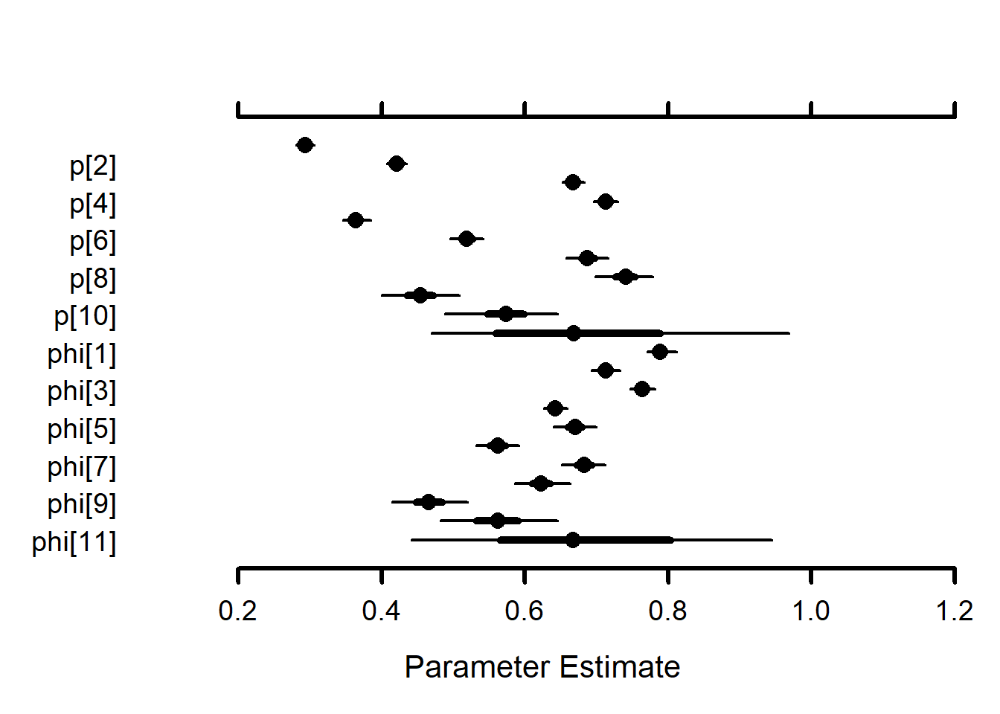

10 Flow effects on survival (phi) models - O’Bear only
The goal of this modelling exercise is to evaluate the effect of new tributary-specific stream flow estimates on survival of brook trout and brown trout. We will compare survival across the WB and tributaries with flow input data as 1) single flow estimate for all locations (historical approach) and 2) hindcasted flows for each tributary based on new tributary-specific flows which are available since 2000.
The goal is to find the best structure for the survival model, then compare survival estimates with tributary-specific flow to estimates with common flow across locations.
Structure options include [species, cohort, season, isYOY, flow, flow^2]
10.0.1 Model phiT_pT (tt)
Single estimates of phi and p (across, cohorts, flow)
10.0.1.1 Set up and run model
Model is run using targets in modelCMR_tt_OB.R
# Following https://oliviergimenez.github.io/bayesian-cr-workshop/worksheets/4_demo.html
#
out <- tar_read(tt_modelOut_OB)
MCMCplot(object = out$mcmc)
MCMCsummary(object = out$mcmc, round = 3) mean sd 2.5% 50% 97.5% Rhat n.eff
p[1] 0.293 0.006 0.281 0.293 0.305 1.00 275
p[2] 0.421 0.007 0.407 0.421 0.434 1.01 575
p[3] 0.667 0.007 0.652 0.667 0.683 1.00 382
p[4] 0.713 0.009 0.696 0.713 0.730 1.00 313
p[5] 0.364 0.010 0.347 0.364 0.384 1.09 259
p[6] 0.519 0.012 0.496 0.519 0.542 1.01 427
p[7] 0.687 0.014 0.658 0.687 0.716 1.00 334
p[8] 0.740 0.021 0.698 0.741 0.778 1.02 201
p[9] 0.454 0.027 0.400 0.455 0.508 1.01 236
p[10] 0.573 0.038 0.489 0.573 0.646 1.00 244
p[11] 0.681 0.141 0.469 0.668 0.969 1.92 18
phi[1] 0.789 0.010 0.771 0.789 0.812 1.00 141
phi[2] 0.713 0.010 0.693 0.713 0.732 1.00 194
phi[3] 0.764 0.009 0.747 0.764 0.781 1.02 238
phi[4] 0.642 0.008 0.626 0.642 0.659 1.00 260
phi[5] 0.670 0.015 0.640 0.670 0.700 1.11 130
phi[6] 0.562 0.015 0.533 0.562 0.592 1.14 142
phi[7] 0.683 0.015 0.652 0.683 0.712 1.03 233
phi[8] 0.623 0.019 0.586 0.623 0.663 1.04 210
phi[9] 0.466 0.027 0.415 0.466 0.520 1.03 149
phi[10] 0.563 0.043 0.483 0.563 0.645 1.02 122
phi[11] 0.684 0.146 0.442 0.668 0.945 1.93 15 priors <- runif(out$runData$nIter * out$runData$nChains, 0, 1)
MCMCtrace(object = out$mcmc,
#ISB = FALSE,
#exact = TRUE,
params = c("phi", "p"),
pdf = FALSE,
priors = priors)